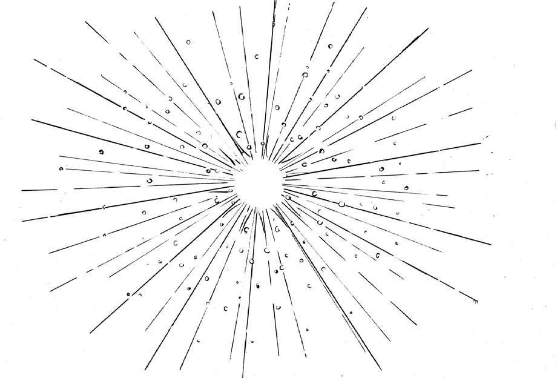

1645年，英国北爱尔兰阿马郡圣公会 [1] 主教詹姆斯·厄舍（James Usher）宣告宇宙诞生时间为公元前4004年10月22日傍晚6点。据说这是他研习《圣经》和世界历史多年得出的权威结论。一直到19世纪，有关地球年龄的理论都相当受欢迎，然而地质学和达尔文进化论则清楚地表明，地球显然要比主教判定的年龄古老很多。
目前大家普遍认为地球已存在约45.4亿年之久，即4 540 000 000岁。地球真的已经非常非常老了。45.4亿这个数值是经由复杂数学计算和放射性定年法推算而来的，后者包括放射性碳定年法、钾氩定年法和铀铅定年法。
本质上讲，放射性定年法是基于放射性衰变，利用自然发生的放射性化学成分（同位素）与其衰变产物的比率来推算时间的。例如，我们知道放射性化学成分铀衰变会形成铅，看一块石头的铅含量就能计算出最初有多少铀，共花费多长时间才衰变出这么多铅。
科学家将此技术应用于非常古老的石头和矿物质的检测中，包括陨石和从月球采集的矿物样本，于是得出了45.4亿年这个神奇的数值。至少从目前看来，这个结论得到了多数人的认可。
目前所知的最古老的地球物质是在西澳大利亚找到的锆石晶体。经测定，它们已有44亿年历史。同时，目前所知的最古老的陨石物质有45.67亿年历史。普遍认为，太阳系的出现不会比这些物质早太久。

经测定，宇宙大爆炸发生于135亿到137.5亿年之前
追根溯源，让我们返回地球或太阳系出现之前——宇宙诞生之时。最有影响力的一种学说是大爆炸宇宙论，认为宇宙是由一个致密炽热的奇点于一次大爆炸后膨胀形成的，并且不断向太空膨胀，这表示宇宙本身也在不断膨胀中。